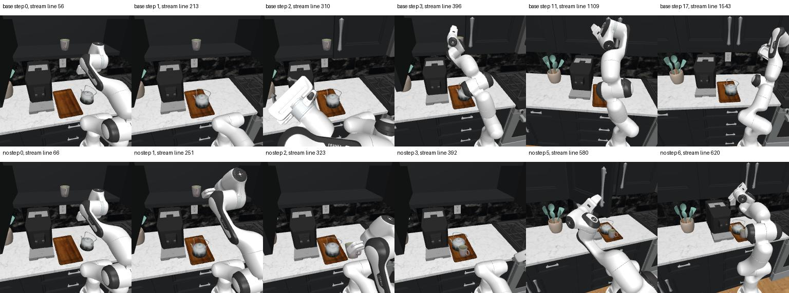
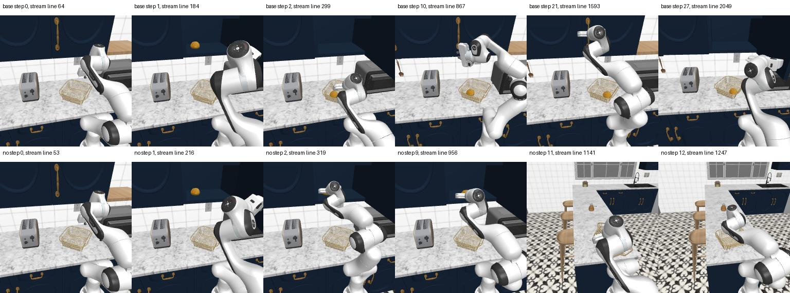
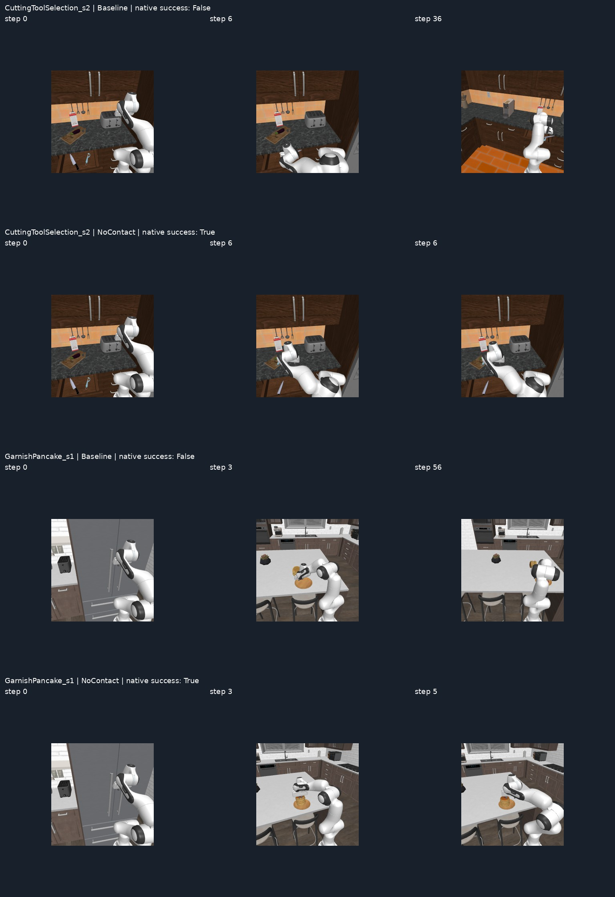

历史案例：旧版过滤进度实验
以下案例属于2026-11-05的旧版46/160，包含任务进度过滤，不属于当前新版44/160。查看新版 E04 · 旧版归档与下载
HARNESSVLA / ROBOCASA
接触反馈消融 · 结果变化案例
六个已逐帧检查的 Unseen 新增成功；与完整 160 对统计一起阅读。
完整 Unseen 结果为 baseline 21/80、NoContactGT 20/80：11 局新增成功，12 局由成功变失败。这里选取其中六个新增成功解释动作过程，并非全部变化或随机抽样。
具体完成了什么
| 案例 | Baseline 未完成的过程 | NoContactGT 完成的过程 | VLA / 手工动作数 baseline → NoContactGT |
|---|---|---|---|
| ArrangeBreadBasketseed 1 | 面包早已装篮，但后续抓不起篮子，反复回到柜门。 | 两次手动调整接近位置后，arm VLA 完成装篮；full-body VLA 运输篮子。 | 15 / 12 → 10 / 2 |
| ArrangeTeaseed 2 | 杯子还在柜中就开始关门，后续恢复失败。 | 连续 6 次 VLA 取出杯子、将杯子与水壶放上托盘，再关门。 | 12 / 5 → 6 / 0 |
| BreadSelectionseed 2 | 先拿错 cupcake，随后牛角包抓取未成功，果酱仍在台面。 | 调整腕俯仰与抓取高度后抓住牛角包，再放置果酱并撤离。 | 13 / 35 → 11 / 27 |
| CategorizeCondimentsseed 2 | shaker 已归位，但瓶子留在台面；多次解析抓取未解决。 | 前 3 次 VLA 已将两物体放入柜，再侧推调整组间距，撤离后成功。 | 11 / 20 → 9 / 44 |
| CuttingToolSelectionseed 2 | 刀与削皮器均未成功放到砧板上。 | 连续 6 次 VLA 将削皮器放到板上、刀留在抽屉，满足本局任务。 | 19 / 17 → 6 / 0 |
| GarnishPancakeseed 1 | 第 3 次 VLA 时煎饼已离开盘子，后续未恢复。 | 连续 5 次 VLA 把草莓放到仍在盘上的煎饼上，退开后成功。 | 9 / 47 → 5 / 0 |
动作次数来自保存的 command；不包含只读观测、几何查询，也不是模型响应数。Condiments 的手工动作更多，因此这些成功不能统一解释为“减少 Planner 干预”。
首次反馈前，执行已出现分叉
六局的初始三相机 PNG 逐字节相同，已记录的机器人状态和任务文本相同，首次 VLA 工具命令相同，均执行 40 × 8 步。首次调用返回后的末端位置却已不同：
| 案例 | 首次返回后的末端位置差 | 从开局起相同的动作命令数 |
|---|---|---|
| ArrangeBreadBasket · s1 | 7.91 cm | 3 |
| ArrangeTea · s2 | 53.33 cm | 5 |
| BreadSelection · s2 | 15.35 cm | 3 |
| CategorizeCondiments · s2 | 59.03 cm | 5 |
| CuttingToolSelection · s2 | 13.12 cm | 6 |
| GarnishPancake · s1 | 19.02 cm | 5 |
CuttingToolSelection 的前 6 个命令、GarnishPancake 的前 5 个命令，已覆盖 NoContactGT 的完整成功轨迹；baseline 执行同样的命令前缀却未完成。
相同工具命令不等于相同底层动作向量。启动链把场景 seed 传给模拟器，没有同时固定独立 VLA 服务的随机采样；模型推理含初始动作噪声。未记录完整 RNG 和隐藏模拟器状态，不能断定每次差异都来自同一个随机源。
轨迹图像



可支持的结论
六局的最终成功都来自环境原生判定，两组对应的评分源码与初始记忆一致。图片和动作记录能解释任务如何完成，却不能证明去掉接触反馈带来了提升。要分离消融效应，需要同时控制场景与 VLA 采样，并增加成对重复运行。
返回 E04 设置、审计与完整结果 →